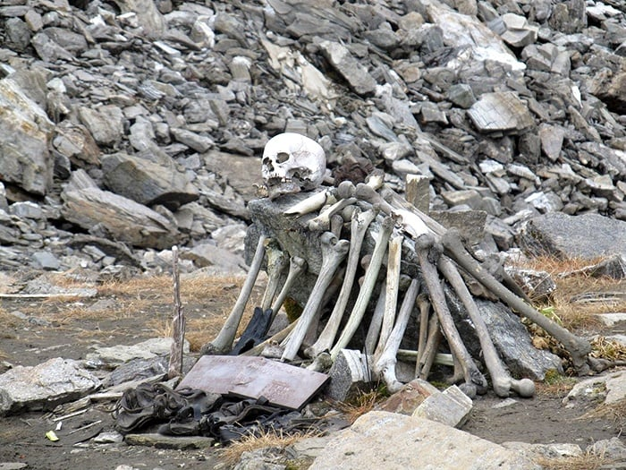

Auli
"The Switzerland of India" — Auli is a popular ski destination.
"The Switzerland of India" — Auli is a popular ski destination.


Hotels and resorts in Auli for skiing and trekking.
Local cuisine and international options available in resorts.
Cost: ₹3,000 – ₹8,000 per person (Includes travel, stay, food – depends on season)
Duration: 2–4 days for skiing and sightseeing
Auli is a hill station and ski destination in the Chamoli district of Uttarakhand. It is known for its slopes and is a part of the famous skiing destinations in India.